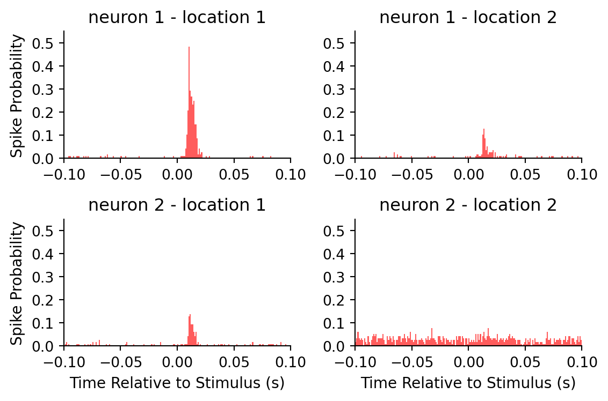

BMES 710: Lab 4 - PSTH
Introduction: PSTH and Neurophysiological Parameters
Dataset Organization
- The file PSTH.mat is a cell array whose first two elements contain numerical arrays representing the time each spike occurs (in seconds) for two neurons in the rat barrel cortex (somatosensory representation of the whisker system).
- Once you load this dataset in MATLAB you should be able to access all the spike times of neuron one or two with the command ‘PSTHdata{1}’ or ‘PSTHdata{2}’ respectively. The remaining 2 columns (PSTHdata{3,4}) contain numerical arrays representing the stimulation times (in seconds) of two different whiskers (locations L1 and L2).
PSTH Algorithm
- In general, the peristimulus time histogram (PSTH) shows the conditional probability of a spike in the spike train at time t on the condition that there is a reference stimulus at time zero.
- The time axis is divided into bins of size ∆t. The first bin is [XMin, XMin+∆t).
- The second bin is [XMin+∆t, Xmin+∆t*2), etc.
- The left end is included in each bin, the right end is excluded from the bin.
- Let ref[k] be the array of reference events (stimulation times) for one whisker and ts[i] be the array of spike times for one neuron.
ref[k]:
calculate the distances from this stimulus to all the spikes in the spike train:
d = ts - ref[k]for each i:
if d[i] is inside the first bin, increment the bin counter for the first bin: if d[i] >= XMin and d[i] < XMin + ∆t: then bincount[1] = bincount[1] + 1 if d[i] is inside the second bin, increment the bin counter for the second bin: if d[i] >= XMin + ∆t and d[i] < XMin + ∆t*2: then bincount[2] = bincount[2] + 1 and so on...
If the desired unit of measure is Counts/∆t, no further calculations are performed. If the desired unit of measure is Probability, bin counts are divided by the number reference events (remember, this does not apply if ∆t is too large). If the desired unit of measure is Spikes/Sec, bin counts are divided by NumRefEvents*∆t, where NumRefEvents is the number of reference events.
If you instead decide to use a function like histcounts to place spikes in bins, you still need to shift the spikes with respect to each stimulus time before collecting the spikes around that stimulus time. We will walk through this in class, but please contact Dr. von Reyn if you still have questions.
Part 1: Generation of the PSTH for location L1 and L2
- Use your dataset to generate the peristimulus time histogram (PSTH) of the 2 neurons (‘PSTHdata{1}’ and ‘PSTHdata{2}’) for stimulus location L1 and L2 (‘PSTHdata{3}’ and ‘PSTHdata{4}’). Use a binsize (∆t) of 1ms (0.001 seconds) and let Xmin = -100 ms and Xmax = 100 ms (-0.1 seconds and 0.1 seconds). Generate a graph for each neuron for each stimulated location. Make sure you put the unit of measures on each axis (x is time, y is the probability a spike occurs in that bin).

- Describe qualitatively if the neurons are responding to the stimulus.
For neuron 1, we see a clear peak in spike probability shortly after the stimulus for location 1, indicating a strong response to the stimulus. For location 2, there are a few small peaks, but they are not as pronounced, suggesting a weaker or more variable response to the stimulus.
For neuron 2, the PSTHs for location 1 shows a small peak in spike probability shortly after the stimulus, indicating a weak response. For location 2, we observe several spikes of very low magnitude from 100ms before the stimulus to 100ms after; this appears to primarily be background neural activity and not in response to the stimulus.
Part 2: Extraction of Neurophysiological Measures from the PSTH
The PSTH can be used to extract quanititative measures that characterize the response of the neurons to the stimulus. In order to identify significant responses in the PSTHs:
- a threshold is set as the average background activity (BA) of the neuron (evaluated from 100 to 5ms before the stimulus) plus 3 standard deviations (SD) from the BA
- the first and last significant bin (1ms bin size) must exceed the threshold in a window between 5 and 90 ms after the stimuli are identified, and
- the first significant bin must be followed by at least two additional consecutive bins over the threshold.
For every significant response, four parameters are extracted from the PSTH:
- the response magnitude (RM), defined as the sum of the PSTH between the first and last significant bin (FSB and LSB)
- the peak response (PR), defined as a the maximum probability of a spike occuring in a bin
- the first significant bin latency (FBL)
- the last significant bin latency (LBL)
- the peak latency (PL), defined as the time intervals between the stimulus onset and the first significant bin or the peak, respectively
- Generate a table for both neurons for both stimulated locations containing each of the five parameters (RM, PR, FBL, LBL, and PL) given above. Make sure the starting PSTHs are generated using the probability unit of measure.
| Neuron | Location | RM | PR | FBL (s) | LBL (s) | PL (s) |
|---|---|---|---|---|---|---|
| neuron 1 | location 1 | 2.3621 | 0.4828 | 0.0070 | 0.0210 | 0.0100 |
| neuron 1 | location 2 | 0.6552 | 0.1293 | 0.0110 | 0.0410 | 0.0130 |
| neuron 2 | location 1 | 0.6638 | 0.1379 | 0.0090 | 0.0160 | 0.0110 |
| neuron 2 | location 2 | nan | nan | nan | nan | nan |
- How do these measures relate to the qualitative observations for part 1.b?
The response magnitude (RM) quantitatively reflects the overall spike activity between the first and last bins. For neuron 1 at location 1, the high RM aligns with the strong response observed quantitativelty. While, at location 2, the lower RM suggests a weaker or more variable response. For neuron 2 at location 1, the low RM aligns with the weak response observed.
The peak response (PR) provides a measure of the highest probability of a spike in any bin. For neuron 1 at location 1, the high PR correlates with the clear peak in spike probability, indicating a strong response. For neuron 1 location 2 and neuron 2 location 1, the lower PR correlates with the smaller peaks in spike probability, indicating a weaker response.
The first significant bin latency (FBL) and last significant bin latency (LBL) provide temporal context for the response. The peak latency (PL) indicates the timing of the maximum response. We see that neuron 1 location 1 exhibited the most rapid response, followed by neuron 2 location 1 and finally by neuron 1 location 2.
Note: No significant responses were identified for neuron 2 at location 2.
- Which of these parameters would you use to decide if the neuron responded or not to a stimulus location and why?
The peak response (PR) and first bin latency (FBL) would be the most useful parameters for determining if a neuron responded to a stimulus location. PR indicates the strength of the response and FBL shows how quickly the neuron responded after the stimulus, both critical for determing if a significant response occurred.
- The threshold is calculated as the BA + K*SD(BA), where we set K=3 to obtain the measures calculate in (2.a). What do you think it will happen, if you vary the value of K, to the measures of the table obtained in (2.a)?
By varying K, you would change thre sensitivity of the measures; lower K values could lead to more bins being considered significant (potentially including more noise), while higher K values would require stronger responses to be considered significant, thus potentially excluding weaker but still significant responses.
- Given your observation in point (2.d), what is the advantage of having K different than zero?
Setting \(K > 0\) ensures that only responses that are significantly above the background activity are considered significant. This helps to reduce the amount of noise in the PSTH by capturing only the most prominent responses.